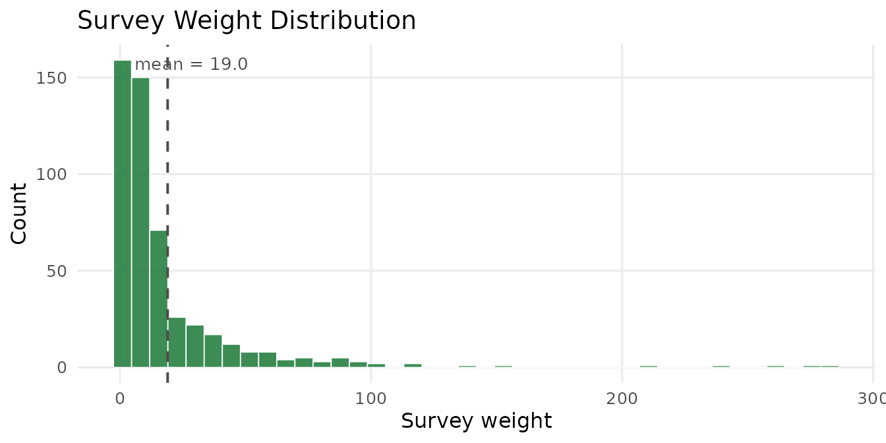
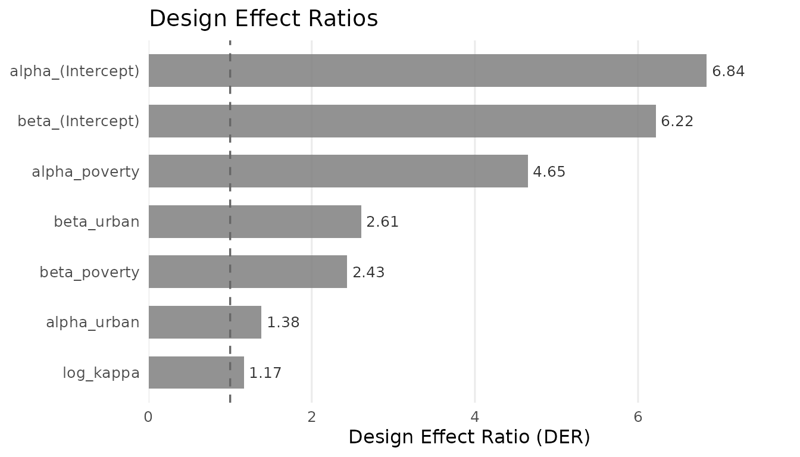
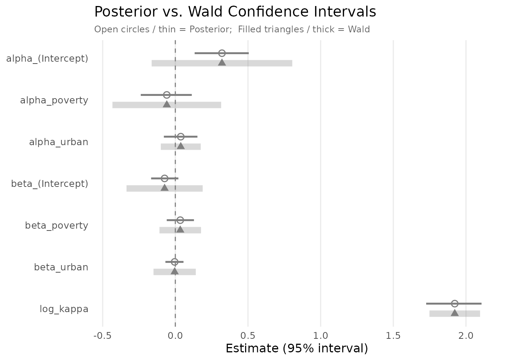
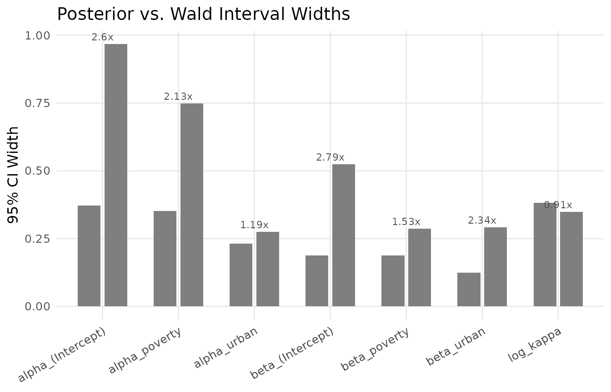

Survey Design Corrections
JoonHo Lee
2026-02-27
Source:vignettes/02-survey-design.Rmd
02-survey-design.RmdOverview
Most large-scale social surveys do not draw observations at random from the population. Instead, they use complex survey designs — stratification, clustering, and unequal probability sampling — that make data collection feasible but introduce dependencies the analyst must account for. Ignoring the survey design leads to two problems:
- Biased point estimates. If some groups are oversampled, the raw sample means do not estimate population quantities without reweighting.
- Underestimated standard errors. Clustering means that observations within the same primary sampling unit (PSU) are more similar than a simple random sample would produce. Naive standard errors can be far too small.
This vignette shows how hurdlebb addresses both problems. By the end you will understand:
- How to pass survey design variables (
weights,stratum,psu) tohbb(). - Why the resulting pseudo-posterior targets population parameters but produces standard deviations that are unreliable for inference.
- How the sandwich variance estimator recovers design-consistent standard errors.
- How to read design effect ratios (DERs) and what they tell you.
- Why Wald confidence intervals should replace posterior intervals when analysing survey data.
We assume you have read the Getting Started vignette and are
comfortable with the basic hbb() workflow.
The Survey Design
The synthetic dataset nsece_synth_small mimics the 2019
National Survey of Early Care and Education (NSECE), a nationally
representative study that uses a stratified, clustered
design:
- Strata group providers by geography and provider type before sampling. Stratification improves precision by ensuring every subpopulation is represented.
- Primary sampling units (PSUs) are geographic clusters (roughly counties) within each stratum. Providers inside the same PSU share local economic and regulatory conditions, creating positive intra-cluster correlation.
- Sampling weights equal the inverse of each provider’s selection probability, adjusted for non-response. A provider with weight 50 represents roughly 50 providers in the population.
data("nsece_synth_small", package = "hurdlebb")
cat("Sample size:", nrow(nsece_synth_small), "\n")
#> Sample size: 504
cat("Strata: ", length(unique(nsece_synth_small$stratum)), "\n")
#> Strata: 30
cat("PSUs: ", length(unique(nsece_synth_small$psu)), "\n")
#> PSUs: 304
cat("Weight range:", round(range(nsece_synth_small$weight), 1), "\n")
#> Weight range: 1 282.9
cat("Weight CV: ", round(sd(nsece_synth_small$weight) /
mean(nsece_synth_small$weight), 2), "\n")
#> Weight CV: 1.7
if (requireNamespace("ggplot2", quietly = TRUE)) {
library(ggplot2)
w <- nsece_synth_small$weight
ggplot(data.frame(weight = w), aes(x = weight)) +
geom_histogram(bins = 40, fill = pal["reference"], colour = "white",
alpha = 0.85, linewidth = 0.3) +
geom_vline(xintercept = mean(w), linetype = "dashed",
colour = "grey30", linewidth = 0.7) +
annotate("text", x = mean(w) * 1.5, y = Inf, vjust = 2,
label = sprintf("mean = %.1f", mean(w)),
size = 3.5, colour = "grey30") +
labs(x = "Survey weight", y = "Count",
title = "Survey Weight Distribution") +
theme_minimal(base_size = 12) +
theme(panel.grid.minor = element_blank())
}
Distribution of survey weights. The right skew indicates that some providers represent many more population units than others.
Fitting the Weighted Model
Incorporating the survey design into hbb() requires
three additional arguments — weights, stratum,
and psu — each taking the name of the corresponding column
in your data frame:
# This is the code you would run (takes ~2-5 minutes):
fit_w <- hbb(
y | trials(n_trial) ~ poverty + urban,
data = nsece_synth_small,
weights = "weight",
stratum = "stratum",
psu = "psu",
chains = 4,
seed = 42
)Behind the scenes, hbb() normalises the weights (so they
sum to the sample size
),
then multiplies each provider’s log-likelihood contribution by its
weight. The result is a weighted pseudo-posterior that
shifts point estimates toward the population-representative values.
results <- readRDS(find_extdata("vig02_results.rds"))
sandwich <- readRDS(find_extdata("vig02_sandwich.rds"))
wald_ci <- readRDS(find_extdata("vig02_wald_ci.rds"))
loo_comp <- readRDS(find_extdata("vig02_loo_compare.rds"))
cat(paste(results$print_text, collapse = "\n"))
#> Hurdle Beta-Binomial Model Fit
#> ==============================
#>
#> Model type : Weighted (no random slopes, survey-weighted)
#> Stan model : hbb_weighted
#> Formula : y | trials(n_trial) ~ poverty + urban
#>
#> Observations (N) : 504
#> Covariates (P) : 3 (intercept + 2 predictors)
#> Zero rate : 0.379
#> Survey weights : yes
#>
#> MCMC:
#> Chains : 4
#> Warmup : 1000
#> Sampling : 1000
#> Total draws : 4000
#> Elapsed : 5.0 seconds
#>
#> Diagnostics:
#> Divergent transitions : 0 [OK]
#> Max treedepth hits : 0 [OK]
#> E-BFMI : 1.105, 1.107, 1.028, 1.062
#> Max Rhat : 1.0033 [OK]
#> Min bulk ESS : 1946 [OK]
#> Min tail ESS : 1951 [OK]
#>
#> Use summary() for parameter estimates.Note the Weighted label — this confirms that survey weights were active during estimation.
The Pseudo-Posterior
In a standard Bayesian analysis the posterior is The pseudo-log-likelihood replaces this with where are the normalised weights. Providers representing more population units contribute proportionally more to the likelihood surface.
This is exactly what we want for point estimation: the posterior means target the finite-population parameters. However, the posterior standard deviations are no longer trustworthy for inference. The weights distort the curvature of the likelihood — a provider with weight 50 acts as though it were replicated 50 times, artificially inflating the effective sample size. The pseudo-posterior becomes too concentrated.
Key insight: the pseudo-posterior gives good point estimates but misleading uncertainty. We need the sandwich variance estimator to recover reliable standard errors.
Sandwich Standard Errors
The sandwich variance estimator has a long history in frequentist survey statistics. hurdlebb adapts it to the pseudo-posterior setting following Williams & Savitsky (2021):
where:
- is the observed Fisher information (the negative Hessian of the pseudo-log-posterior). Its inverse is the “bread” — the variance you would get with a simple random sample.
- is the clustered outer-product-of-gradients — the “meat” of the sandwich. It sums score contributions at the PSU level, capturing intra-cluster correlation.
One function call computes everything:
# In a live session:
sandwich <- sandwich_variance(fit_w)The returned hbb_sandwich object contains the full
matrix decomposition:
diag_df <- data.frame(
parameter = sandwich$param_labels,
H_inv = round(diag(sandwich$H_obs_inv), 5),
V_sand = round(diag(sandwich$V_sand), 5)
)
diag_df$ratio <- round(diag_df$V_sand / diag_df$H_inv, 2)
diag_df
#> parameter H_inv V_sand ratio
#> alpha_(Intercept) alpha_(Intercept) 0.00891 0.06095 6.84
#> alpha_poverty alpha_poverty 0.00783 0.03641 4.65
#> alpha_urban alpha_urban 0.00354 0.00490 1.38
#> beta_(Intercept) beta_(Intercept) 0.00288 0.01788 6.21
#> beta_poverty beta_poverty 0.00219 0.00533 2.43
#> beta_urban beta_urban 0.00211 0.00551 2.61
#> log_kappa log_kappa 0.00676 0.00790 1.17The ratio column is the design effect ratio (DER), which
we examine next.
Design Effect Ratios
The design effect ratio (DER) quantifies how much the survey design inflates each parameter’s variance relative to a simple random sample:
A DER of 1.0 means the survey design has no impact. A DER of 5.0 means the true variance is five times larger than a naive analysis would suggest — equivalently, the naive standard error is times too small.
der_df <- data.frame(
parameter = sandwich$param_labels,
DER = round(sandwich$DER, 2),
SE_ratio = round(sqrt(sandwich$DER), 2)
)
knitr::kable(der_df, align = c("l", "r", "r"),
caption = "Design effect ratios by parameter.")| parameter | DER | SE_ratio | |
|---|---|---|---|
| alpha_(Intercept) | alpha_(Intercept) | 6.84 | 2.62 |
| alpha_poverty | alpha_poverty | 4.65 | 2.16 |
| alpha_urban | alpha_urban | 1.38 | 1.18 |
| beta_(Intercept) | beta_(Intercept) | 6.22 | 2.49 |
| beta_poverty | beta_poverty | 2.43 | 1.56 |
| beta_urban | beta_urban | 2.61 | 1.61 |
| log_kappa | log_kappa | 1.17 | 1.08 |
if (requireNamespace("ggplot2", quietly = TRUE)) {
library(ggplot2)
der_plot <- data.frame(
parameter = factor(sandwich$param_labels,
levels = sandwich$param_labels[order(sandwich$DER)]),
DER = sandwich$DER,
margin = ifelse(grepl("^alpha", sandwich$param_labels), "Extensive",
ifelse(grepl("^beta", sandwich$param_labels), "Intensive",
"Dispersion"))
)
der_plot$margin <- factor(der_plot$margin,
levels = c("Extensive", "Intensive", "Dispersion"))
ggplot(der_plot, aes(x = DER, y = parameter, fill = margin)) +
geom_col(alpha = 0.85, width = 0.65) +
geom_vline(xintercept = 1, linetype = "dashed", colour = "grey40",
linewidth = 0.6) +
geom_text(aes(label = sprintf("%.2f", DER)),
hjust = -0.15, size = 3.3, colour = "grey20") +
scale_fill_manual(
values = c(Extensive = pal["extensive"], Intensive = pal["intensive"],
Dispersion = pal["dispersion"]),
name = "Margin"
) +
scale_x_continuous(expand = expansion(mult = c(0, 0.15))) +
labs(x = "Design Effect Ratio (DER)", y = NULL,
title = "Design Effect Ratios") +
theme_minimal(base_size = 12) +
theme(panel.grid.major.y = element_blank(),
panel.grid.minor = element_blank(),
legend.position = "bottom")
}
#> Warning: No shared levels found between `names(values)` of the manual scale and the
#> data's fill values.
#> No shared levels found between `names(values)` of the manual scale and the
#> data's fill values.
#> No shared levels found between `names(values)` of the manual scale and the
#> data's fill values.
Design effect ratios (DER) by parameter. The dashed line at DER = 1 marks no design effect. Intercepts show the greatest inflation; the dispersion parameter is largely unaffected.
Several patterns are worth noting:
- Intercepts have the largest DERs (6.84 for extensive, 6.22 for intensive). This is common: the overall mean is most sensitive to clustering because every unit within a cluster shares the same local baseline.
- Slope coefficients have moderate DERs (1.38 to 4.65). Within-cluster variation in covariates partially offsets the clustering effect.
- The dispersion parameter () has the smallest DER (1.17), because overdispersion is driven by within-unit variability, not clustering.
The mean DER across all seven parameters is 3.62. As a guideline: DERs above 2–3 indicate that ignoring the survey design would lead to materially overconfident inference.
Posterior vs. Wald Confidence Intervals
We can now contrast two types of intervals:
- Posterior intervals (from the pseudo-posterior MCMC draws). These are too narrow because they do not account for the survey design.
- Wald intervals constructed as . These are design-consistent.
The summary() method accepts a sandwich
argument to produce the Wald version. Compare the two:
cat("=== Posterior inference ===\n")
#> === Posterior inference ===
cat(paste(results$summary_text, collapse = "\n"))
#>
#> ============================================================
#> Hurdle Beta-Binomial Model Summary
#> ============================================================
#>
#> Model type : Weighted (survey-weighted)
#> Formula : y | trials(n_trial) ~ poverty + urban
#> Observations : 504
#> Zero rate : 37.9%
#> Inference : Posterior (MCMC)
#> Level : 0.95
#>
#> --------------------------------------------------
#> Extensive Margin (alpha)
#> --------------------------------------------------
#> Parameter Estimate SE CI_lower CI_upper Rhat ESS
#> alpha_(Intercept) 0.321 0.096 0.133 0.505 1.0016 4633
#> alpha_poverty -0.059 0.089 -0.238 0.113 1.0006 4269
#> alpha_urban 0.037 0.060 -0.079 0.152 1.0016 4239
#>
#> --------------------------------------------------
#> Intensive Margin (beta)
#> --------------------------------------------------
#> Parameter Estimate SE CI_lower CI_upper Rhat ESS
#> beta_(Intercept) -0.074 0.048 -0.167 0.021 1.0020 5016
#> beta_poverty 0.034 0.047 -0.059 0.128 1.0005 4987
#> beta_urban -0.005 0.032 -0.068 0.056 1.0006 4431
#>
#> --------------------------------------------------
#> Dispersion
#> --------------------------------------------------
#> kappa = 6.840 (log_kappa = 1.923, SE = 0.097)
#> kappa 95% CI: [5.618, 8.224]
#>
#> --------------------------------------------------
#> MCMC Diagnostics
#> --------------------------------------------------
#> Divergent transitions : 0 [OK]
#> Max treedepth hits : 0 [OK]
#> E-BFMI : 1.105, 1.107, 1.028, 1.062 [OK]
#> Max Rhat : 1.003 [OK]
#> Min ESS (bulk) : 1946 [OK]
#> Min ESS (tail) : 1951 [OK]
cat("=== Wald inference (sandwich SE) ===\n")
#> === Wald inference (sandwich SE) ===
cat(paste(results$summary_wald_text, collapse = "\n"))
#>
#> ============================================================
#> Hurdle Beta-Binomial Model Summary
#> ============================================================
#>
#> Model type : Weighted (survey-weighted)
#> Formula : y | trials(n_trial) ~ poverty + urban
#> Observations : 504
#> Zero rate : 37.9%
#> Inference : Wald (sandwich SE)
#> Level : 0.95
#>
#> --------------------------------------------------
#> Extensive Margin (alpha)
#> --------------------------------------------------
#> Parameter Estimate SE CI_lower CI_upper Rhat ESS
#> alpha_(Intercept) 0.321 0.247 -0.163 0.805 1.0016 4633
#> alpha_poverty -0.059 0.191 -0.433 0.315 1.0006 4269
#> alpha_urban 0.037 0.070 -0.100 0.175 1.0016 4239
#>
#> --------------------------------------------------
#> Intensive Margin (beta)
#> --------------------------------------------------
#> Parameter Estimate SE CI_lower CI_upper Rhat ESS
#> beta_(Intercept) -0.074 0.134 -0.336 0.188 1.0020 5016
#> beta_poverty 0.034 0.073 -0.109 0.177 1.0005 4987
#> beta_urban -0.005 0.074 -0.150 0.141 1.0006 4431
#>
#> --------------------------------------------------
#> Dispersion
#> --------------------------------------------------
#> kappa = 6.840 (log_kappa = 1.923, SE = 0.089)
#> kappa 95% CI: [5.746, 8.141]
#>
#> --------------------------------------------------
#> MCMC Diagnostics
#> --------------------------------------------------
#> Divergent transitions : 0 [OK]
#> Max treedepth hits : 0 [OK]
#> E-BFMI : 1.105, 1.107, 1.028, 1.062 [OK]
#> Max Rhat : 1.003 [OK]
#> Min ESS (bulk) : 1946 [OK]
#> Min ESS (tail) : 1951 [OK]
#>
#> --------------------------------------------------
#> Design Effect Ratios (DER)
#> --------------------------------------------------
#> alpha_(Intercept) 6.842
#> alpha_poverty 4.651
#> alpha_urban 1.385
#> beta_(Intercept) 6.218
#> beta_poverty 2.434
#> beta_urban 2.606
#> log_kappa 1.168
#>
#> DER range: [1.168, 6.842], mean: 3.615The Wald CI table from compute_wald_ci():
knitr::kable(
wald_ci[, c("parameter", "post_mean", "se", "z_stat",
"p_value", "ci_lo", "ci_hi", "significant")],
digits = 3, align = c("l", rep("r", 7)),
caption = "Wald 95% confidence intervals from sandwich variance."
)| parameter | post_mean | se | z_stat | p_value | ci_lo | ci_hi | significant |
|---|---|---|---|---|---|---|---|
| alpha_(Intercept) | 0.321 | 0.247 | 1.300 | 0.194 | -0.163 | 0.805 | FALSE |
| alpha_poverty | -0.059 | 0.191 | -0.308 | 0.758 | -0.433 | 0.315 | FALSE |
| alpha_urban | 0.037 | 0.070 | 0.535 | 0.593 | -0.100 | 0.175 | FALSE |
| beta_(Intercept) | -0.074 | 0.134 | -0.552 | 0.581 | -0.336 | 0.188 | FALSE |
| beta_poverty | 0.034 | 0.073 | 0.464 | 0.642 | -0.109 | 0.177 | FALSE |
| beta_urban | -0.005 | 0.074 | -0.063 | 0.950 | -0.150 | 0.141 | FALSE |
| log_kappa | 1.923 | 0.089 | 21.635 | 0.000 | 1.749 | 2.097 | TRUE |
The forest plot below makes the comparison visual. For each parameter, the thin line shows the posterior credible interval and the thick translucent line shows the wider Wald confidence interval:
if (requireNamespace("ggplot2", quietly = TRUE)) {
library(ggplot2)
post_fe <- results$summary_obj$fixed_effects
wald_fe <- results$summary_wald_obj$fixed_effects
ci_df <- data.frame(
parameter = post_fe$parameter,
estimate = post_fe$estimate,
post_lo = post_fe$ci_lower,
post_hi = post_fe$ci_upper,
wald_lo = wald_fe$ci_lower,
wald_hi = wald_fe$ci_upper,
margin = ifelse(grepl("^alpha", post_fe$parameter), "Extensive",
ifelse(grepl("^beta", post_fe$parameter), "Intensive",
"Dispersion")),
stringsAsFactors = FALSE
)
ci_df$margin <- factor(ci_df$margin,
levels = c("Extensive", "Intensive", "Dispersion"))
ci_df$ypos <- rev(seq_len(nrow(ci_df)))
margin_col <- c(Extensive = pal["extensive"], Intensive = pal["intensive"],
Dispersion = pal["dispersion"])
ggplot(ci_df) +
# Wald CI (thick, behind)
geom_segment(aes(x = wald_lo, xend = wald_hi,
y = ypos - 0.12, yend = ypos - 0.12,
colour = margin),
linewidth = 3, alpha = 0.3) +
geom_point(aes(x = estimate, y = ypos - 0.12, colour = margin),
shape = 17, size = 2.5) +
# Posterior CI (thin, in front)
geom_segment(aes(x = post_lo, xend = post_hi,
y = ypos + 0.12, yend = ypos + 0.12,
colour = margin),
linewidth = 0.9) +
geom_point(aes(x = estimate, y = ypos + 0.12, colour = margin),
shape = 1, size = 2.5, stroke = 0.8) +
# Zero reference
geom_vline(xintercept = 0, linetype = "dashed", colour = "grey50",
linewidth = 0.5) +
scale_colour_manual(values = margin_col, name = "Margin") +
scale_y_continuous(breaks = ci_df$ypos, labels = ci_df$parameter) +
labs(x = "Estimate (95% interval)", y = NULL,
title = "Posterior vs. Wald Confidence Intervals",
subtitle = "Open circles / thin = Posterior; Filled triangles / thick = Wald") +
theme_minimal(base_size = 12) +
theme(legend.position = "bottom",
panel.grid.major.y = element_blank(),
panel.grid.minor = element_blank(),
plot.subtitle = element_text(size = 9, colour = "grey40"))
}
#> Warning: No shared levels found between `names(values)` of the manual scale and the
#> data's colour values.
#> No shared levels found between `names(values)` of the manual scale and the
#> data's colour values.
#> No shared levels found between `names(values)` of the manual scale and the
#> data's colour values.
#> No shared levels found between `names(values)` of the manual scale and the
#> data's colour values.
#> No shared levels found between `names(values)` of the manual scale and the
#> data's colour values.
Forest plot comparing posterior (thin lines, open circles) and Wald (thick translucent lines, filled triangles) 95% intervals. Wald intervals are consistently wider, reflecting the true sampling variability from the complex survey design.
The pattern is striking. For alpha_poverty, the
posterior standard error is 0.089 while the sandwich standard error is
0.191 — more than twice as large, consistent with a DER of 4.65
().
Using the posterior interval alone, you might conclude that poverty has
a statistically significant negative effect on participation. The Wald
interval, which properly accounts for the survey design, is much wider
and includes zero.
CI Width Comparison
A grouped bar chart makes the inflation tangible:
if (requireNamespace("ggplot2", quietly = TRUE)) {
library(ggplot2)
post_fe <- results$summary_obj$fixed_effects
wald_fe <- results$summary_wald_obj$fixed_effects
width_df <- data.frame(
parameter = post_fe$parameter,
post_width = post_fe$ci_upper - post_fe$ci_lower,
wald_width = wald_fe$ci_upper - wald_fe$ci_lower,
stringsAsFactors = FALSE
)
width_df$ratio <- round(width_df$wald_width / width_df$post_width, 2)
width_long <- rbind(
data.frame(parameter = width_df$parameter,
width = width_df$post_width, type = "Posterior"),
data.frame(parameter = width_df$parameter,
width = width_df$wald_width, type = "Wald (sandwich)")
)
width_long$parameter <- factor(width_long$parameter,
levels = width_df$parameter)
width_long$type <- factor(width_long$type,
levels = c("Posterior", "Wald (sandwich)"))
ggplot(width_long, aes(x = parameter, y = width, fill = type)) +
geom_col(position = position_dodge(width = 0.7), width = 0.6) +
geom_text(data = width_df,
aes(x = parameter, y = wald_width,
label = paste0(ratio, "x")),
inherit.aes = FALSE,
vjust = -0.5, size = 3, colour = "grey30") +
scale_fill_manual(
values = c("Posterior" = pal["extensive"],
"Wald (sandwich)" = pal["intensive"]),
name = NULL
) +
labs(x = NULL, y = "95% CI Width",
title = "Posterior vs. Wald Interval Widths") +
theme_minimal(base_size = 12) +
theme(axis.text.x = element_text(angle = 30, hjust = 1),
legend.position = "top",
panel.grid.minor = element_blank())
}
#> Warning: No shared levels found between `names(values)` of the manual scale and the
#> data's fill values.
#> No shared levels found between `names(values)` of the manual scale and the
#> data's fill values.
CI width comparison. Wald intervals (red) are uniformly wider than posterior intervals (blue). The ratio printed above each pair approximates the square root of the DER.
Model Comparison with LOO
You may wonder whether the weighted model fits better than the unweighted version. LOO-CV provides the comparison:
# In a live session:
loo_comp <- hbb_loo_compare(base = fit_base, weighted = fit_w)
cat("Model comparison:\n")
#> Model comparison:
print(loo_comp$comparison[, c("model", "elpd_loo", "elpd_diff", "se_diff")])
#> model elpd_loo elpd_diff se_diff
#> 1 base -1485.788 0.00000 0.000000
#> 2 weighted -1496.856 -11.06773 5.800007
cat("\nPairwise z-ratio:\n")
#>
#> Pairwise z-ratio:
print(loo_comp$pairwise)
#> comparison delta_elpd se_diff z_ratio
#> 1 base vs weighted 11.06773 5.800007 1.908227The base (unweighted) model has a slightly higher ELPD () than the weighted model (), with a difference of and . This difference is not significant at conventional levels.
This result may seem counterintuitive — if weights improve inference, why does the weighted model predict less well? The answer lies in what LOO measures. LOO evaluates predictive accuracy for the sample at hand, not population inference. The survey weights distort the likelihood to target population parameters, which can reduce in-sample predictive performance. This is expected behaviour.
Guideline: Do not use LOO to choose between weighted and unweighted models. The decision should be driven by your inferential goal: if the data come from a complex survey and you want population-level conclusions, use weights.
Complete Workflow Summary
Putting it all together:
# 1. Fit weighted model
fit <- hbb(
y | trials(n_trial) ~ poverty + urban,
data = nsece_synth_small,
weights = "weight", stratum = "stratum", psu = "psu",
chains = 4, seed = 42
)
# 2. Posterior summary (naive SEs --- useful for MCMC diagnostics)
summary(fit)
# 3. Sandwich variance (design-corrected SEs)
sand <- sandwich_variance(fit)
# 4. Wald summary (design-corrected CIs + DER)
summary(fit, sandwich = sand)
# 5. Explicit Wald CI table
wald <- compute_wald_ci(coef(fit), sand$V_sand, level = 0.95)When to Use Corrections
| Situation | Recommendation |
|---|---|
| Simple random sample | Use unweighted hbb(), posterior CIs |
| Stratified design, no clustering | Weights may suffice; check DER |
| Stratified clustered design | Full pipeline: weights + sandwich + Wald CIs |
| DER for all parameters | Posterior CIs are adequate |
| DER for key parameters | Sandwich-based Wald CIs are essential |
Reporting. In your manuscript, report posterior means as point estimates and Wald confidence intervals as the uncertainty measure. Include the DER table in a supplement so readers can gauge the severity of design effects.